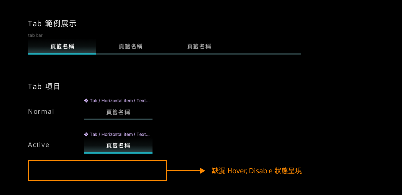
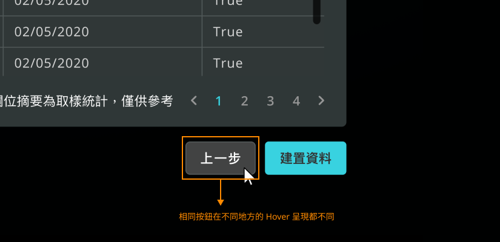
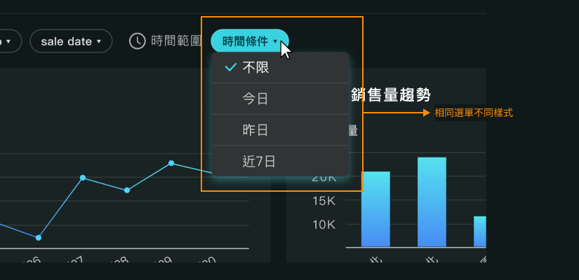

- 提升元、組件的組合彈性以及管理性。
- 提升元件樣式的泛用性。
- 重新定義顏色用途＆延伸應用。
1. 重構 Design System
// Before
Ａ）元組件隨著產品規模越大，數量也變得越多，導致管理困難度很高。
- 加入不同方式的檢視工具，因應不同時候的狀況可作資料表顯示上的彈性調整。
(舊版UI，按鈕樣式設定)
(舊版UI，文字樣式設定)
- 許多元組件的狀態定義並不完善，導致未定義的狀態工程師實作結果都不同。(input, button, navigation item)

(舊版UI，狀態遺漏)

(舊版UI，相同按鈕不同 Hover
呈現)
(舊版UI，相同按鈕不同 Hover
)
- 使用目的一樣的組件，但 UI 呈現樣式卻不同。(ex. 應用程式filter選單)
 (舊版UI，相同組件不同呈現)
(舊版UI，相同組件不同呈現)

(舊版UI，相同組件不同呈現)
Ｂ）舊色彩計畫較為基礎，隨著產品越來越複雜，色彩定義的不足面也開始凸顯。
- 色彩定義不夠細節，因此相同顏色被使用在很多不同地方(ex. 底色、邊線)，導致無法輕易調整顏色。
(舊版UI，色彩定義)
- 顏色搭配邏輯未被詳細設計，遇到就顏色衝突時，只能另外產生新色，最後導致非常多相似色。
- 未來需要支援深淺色雙版本 UI，但目前色票與實際應用有差距，只能逐一調整校對所有頁面與功能呈現。
(舊版UI，太多極為近似的顏色)
// After
Ａ）落實「原子設計」概念，儘可能完整定義元素、元件後再進行組件製作。
- 定義基礎元素，例如：文字的字體大小、色彩計畫、符號、間距、Layout Grid...等。
(新版，基礎元素)
(新版，文字定義)
(新版，Icon 統一)
- 完善基礎元件的狀態，例如：按鈕的 Hover, Focus, Active 的狀態呈現，或是 input 輸入元件的使用狀態，例如：有值與沒有值的 Ｄisabled 狀態呈現區別。
(新版，按鈕狀態)
(新版，下拉選單狀態)
(新版，Tab 狀態)
- 同組件有更多變化類型可供使用，例如：下拉選單的選項呈現可以因應不同顯示或使用需要而切換。(多選/單選，次資訊，符號)
(新版，下拉選單組件)
B）重新定義色彩計畫，加強顏色擴充性以及色彩風格變更的邏輯一致性。
- 顏色採用雙階層的設計，第一層為最原始的色彩層，作為顏色使用的範圍，第二層則為應用層，取用色彩層的顏色做組合，因此可以在進行色彩風格轉換時，可以更明確暸解有哪些顏色可用，以及色票的規則。
(新版，色彩計畫說明)
(新版，色彩計畫)
- 將顏色的使用情境進行分類，在逐一設計各分類中的色票，進行 UI 設計時就可以依照使用意圖來選擇對應的色票顏色，避免相同顏色混雜使用後又產生配色衝突。
(新版，顏色應用分類)
(新版，顏色應用分類)